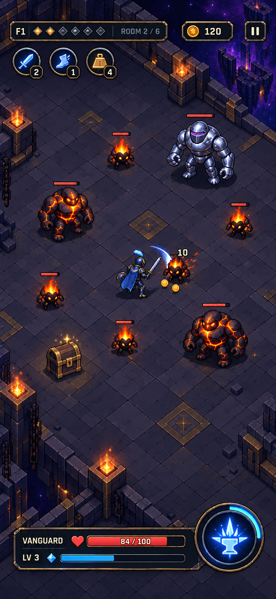
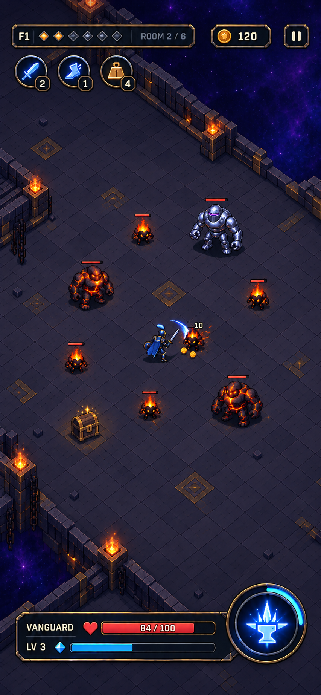
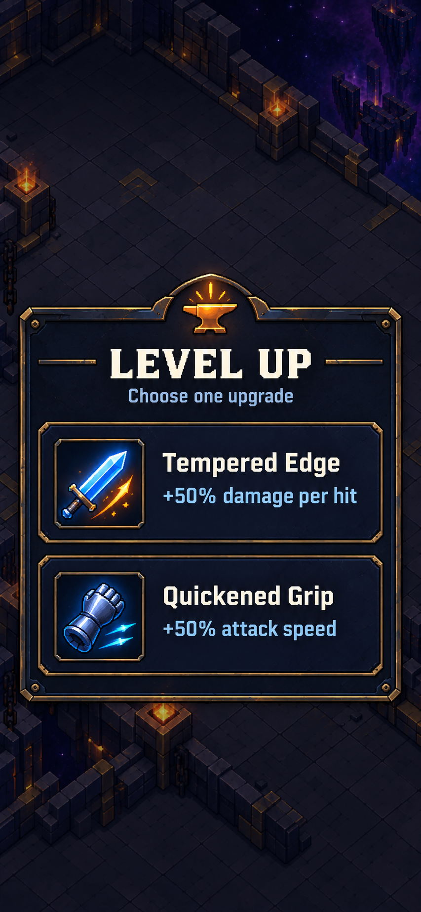

Cryptforge — Art Sprint 01
Cryptforge / 15 September 2026 / Combined direction approved
Readable combat. A quieter forge.
Owner approved A's character prominence, B's quieter floor and C's card hierarchy. These are generated concepts; camera geometry and sprite pixels are approximate. See the first reusable UI components.
A · Closer combat
Preferred character prominence. Compact HUD and one grouped lower panel.

B · Wider combat
More visible floor and smaller threats. A scale study, not a calibrated camera capture.

C · Upgrade choice
Two existing upgrades. Opaque unified panel, full-card choices and clear descriptions.
